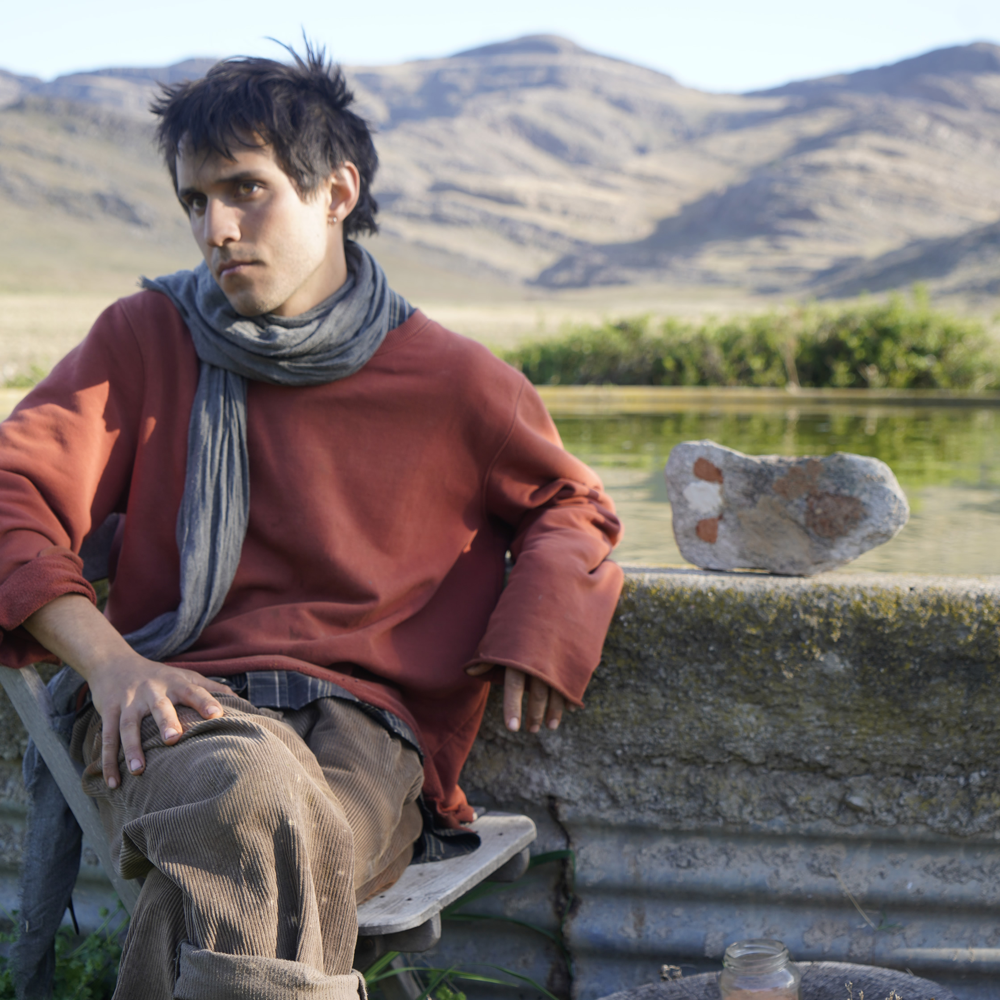

Rama Nápoli
Edición #4 | Arte, tecnología y humanidades ambientales
Se me ocurrió que la mejor forma de compartir lo que me atravesó durante esas dos semanas era mostrando los registros que fui llevando diariamente con una canon digital que mi abuela nunca usó y me regaló antes de viajar a Pigue.
Cuando volví a mi hogar en Berazategui decidí además de ver el material, escribir durante varios días consecutivos para decantar el aprendizaje de todo lo vivido. Me resultó muy difícil llevar un relato lineal y me dispuse a escribir por las mañanas lo que se me viniera a la memoria. Con los videos me limite a ponerlos en una línea de tiempo para poder observarlos luego todos juntos en una continuidad, eso es lo que debería estar adjunto a esta descripción.
Agrego un par de reflexiones cuyo orden no habla de una jerarquía ni mucho menos de una cronología pero creo que la experiencia es eso, los acontecimientos flotan en una nube de recuerdos, emociones e impresiones.
Me sorprendí al encontrarme con lo extraordinario de lo que estábamos haciendo en nuestro día a día, Mariana y Adelina nos llevaban y traían de todos lados, vivimos en una casa en medio del campo al pie de las sierras, si no había viento el silencio era absoluto salvo cuando lo interrumpían las vacas y las aspas de los molinos, visitamos un convento de monjes que nos hablaron de como se impregna el territorio serrano y sus colores en la subjetividad de cada uno de forma sutil y paulatina, caminamos por las sierras, tocamos y olimos el suelo, descubrimos un mundo infinito de microflora a nuestros pies, nos maravillamos con la diversidad de un ecosistema nativo protegido, las mañanas y las noches las destinábamos a trabajar en nuestros proyectos artísticos y compartir nuestra visión del mundo sin decirlo, subimos a una antena de radiofrecuencias derrumbada y abandonada en un acto simbólico para-con el territorio, caminamos abajo del sol, descansamos en la sombra, transmitimos un programa de radio destinado a nadie en particular y al espacio, utilizamos treinta segundos cada uno para decir algo que nos pareciera significativo, leímos en voz alta y en ronda con otras personas, descubrí ideas y autores que me interpelaban de formas nuevas que resonaban conmigo como nunca antes, le agradecí a la sierra por prestarme parte de su suelo para hacer color, a las plantas por brindar parte de su ser para el mismo fin, comprendí que los científicos tienen una sensibilidad alucinante , escuche por dentro a un molino, presencié y asistí el parto de un ternero abortado, dibujé incontables veces el rostro de Mariana hasta que me volví bastante habilidoso al observarla, me fasciné con la forma de hacer arte de Jorge totalmente camuflada con el cotidiano, quedé admirado con el talento y la sensibilidad de Andrés y el uso de sus palabras, quede intrigado con el misterio que rondaba entorno a Adelina y su historia de vida, expusimos nuestras obras en la galería de Marta Bonjour en medio del pueblo y bajamos sus obras con nuestras propias manos para poner las nuestras, camine por el pueblo, pinte adentro, afuera, por la mañana al atardecer y en las noches, vimos una tormenta eléctrica y entendimos que sucedía más allá de nuestro atestiguar el hecho.
Podía seguir enumerando si dedicara más tiempo a este ejercicio, pero no es el punto.
Me sentí acompañado desde el minuto uno, cuidado, valorado, escuchado. También movilizado por lo valioso de trabajar junto a otros en pos de algo en lo que voluntariamente nos involucramos y creíamos justo, desde entender nuestro vínculo con lo no humano, cuestionarnos el concepto de habitar juntos en reciprocidad, hasta replantear nuestra labor como artistas desde la producción y el pensamiento.